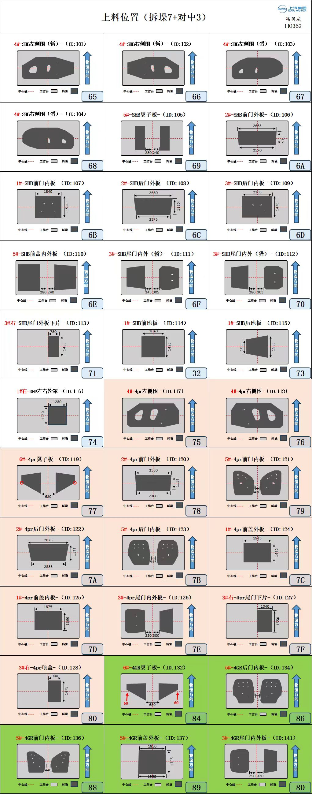

17怎么用这张图
① 找到你的零件按零件编号与名称（带 ID，如 SHB 系列 101～）找到对应那张卡片，别按位置猜。
② 红色虚线＝中心线板料中线要对到台面中心线上，这是对中的基准，偏一点整垛都会歪。
③ 灰色块＝料垛落位卡片里深灰的那块就是料垛该压的位置，白框是工作台范围。
④ 蓝色箭头＝装料方向箭头指向物流方向，反向摆件＝拆垛手抓歪、对中偏差的常见来源。
右下角编号是工位／库位码（按列排：左列 65、68、6B…；中列 66、69、6C…；右列 67、6A、6D…）。图上标的尺寸单位是 mm。
18定位卡原图
点图全屏放大；手机上双指缩放看尺寸标注。图就是标准，文字说明只作提示，不替代原图。

共 415 KB · 点开看全尺寸原图

